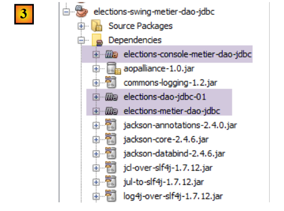
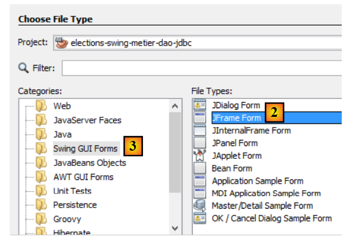
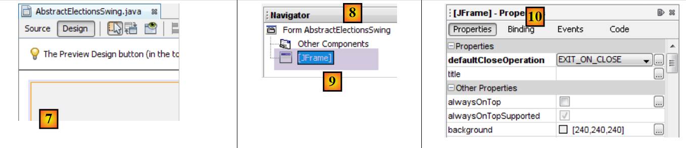
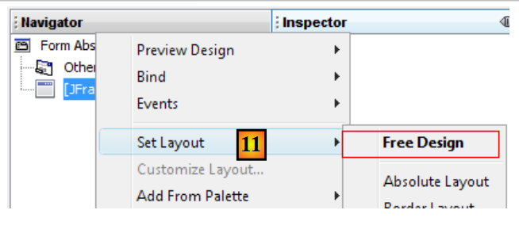
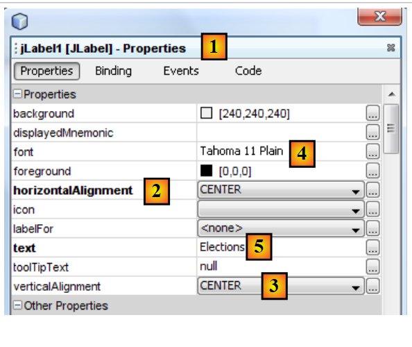
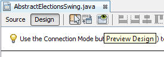
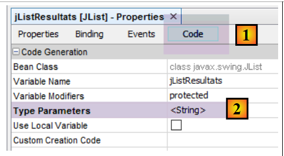
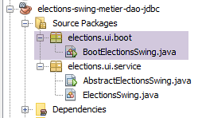
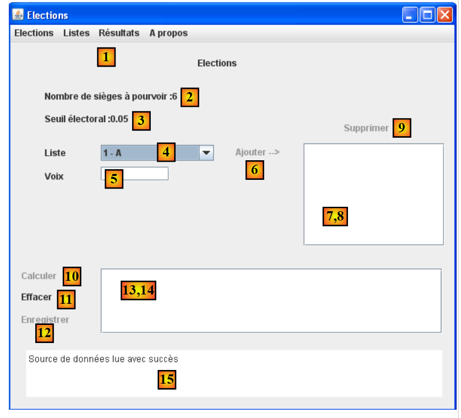
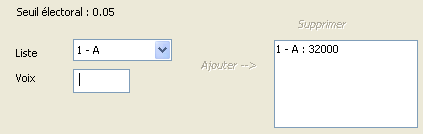

10. [作业]：使用 Swing 界面实现 [ui] 层 -
关键词：多层架构、Spring、依赖注入、Swing 组件库。
 |
10.1. 支持
 |
在 [UI] 层，我们希望构建一个 Swing 图形用户界面。NetBeans 提供了一个名为 [Matisse] 的工具来构建这些 Swing 界面，其性能优于 Eclipse 提供的工具。Swing 界面正逐渐被 JavaFX 界面所取代。NetBeans 和 Eclipse 构建后者时使用的是同一个工具。因此，如果我们构建 JavaFX 界面，就可以在整个分层架构中全程使用 Eclipse。
NetBeans 可以打开任何 Maven 项目。因此，我们将使用之前的 Maven 项目，并向其中添加一个 Swing 界面。 在[2]中，我们通过“文件/打开项目”加载了使用Eclipse构建的三个层的Maven项目。随后，我们构建了这些项目的二进制文件[3]。“构建”和“清理并构建”选项会为所选项目生成二进制文件。这些二进制文件被放置在项目的[target]文件夹中[4-5]：
 |
[清理] 选项会删除此 [目标] 文件夹。[构建] 选项会重新构建它。经验表明，当出现意外问题时，首先应执行项目的 [清理并构建] 操作，以确保您正在使用最新版本。当您拥有配置文件时，这一点尤为必要——因为这些文件即使被修改，在运行项目时也不会触发自动重新编译。 此时，您必须通过执行 [清理并构建] 来强制重新编译，以便将新版本安装到 [目标] 文件夹中。
10.2. 应用程序的工作原理
让我们回到 [Elections] 应用程序的整体架构：
 |
我们目前正专注于[ui]层的新实现。当前唯一存在的实现是一个控制台界面。我们现在正在创建一个图形用户界面。
用户将通过以下界面与[Elections]应用程序进行交互：
 |
 |
图形用户界面位于[ui]层。正是这一层与用户进行交互。
- 启动时，[main] 控制台应用程序会使用 Spring 实例化应用程序的三个层。这一操作在图形用户界面显示之前就已完成。 此外，在初始化阶段，系统还会向 [dao] 层请求描述选举特征的信息（待填补席位数、选举门槛、参选名单）。如果初始化阶段失败（例如无法访问数据），控制台将显示错误信息，且不会显示图形用户界面。
- 若数据读取成功，则显示包含以下信息的图形界面（参见上图截图）：
- 待填补席位数（2）
- 第(3)项中的选举门槛
- 第(4)项中的候选人名单编号及名称
- 随后，用户通过字段4（ID - 名称）、5（票数）和6（添加）为每个候选人名单分配票数。

- 随后，您可以使用链接 (10) 计算席位：

- 点击 [保存] 链接 (12) 可将结果保存至数据源。
10.3. 实现 [ui] 层的 [ElectionsSwing] 类
10.3.1. NetBeans 项目
注意：第 22.4 节介绍了如何获取 NetBeans。
该应用程序的最终 NetBeans 项目将如下所示 [1]。请按照步骤 [2–5] 进行构建：
 |
 |
确保项目已配置为使用 JDK 1.8 进行编译 [1-6]：
 |
10.3.2. Maven 配置
新项目 [elections-swing-business-dao-jdbc] 将基于之前的项目 [elections-console-business-dao-jdbc] 构建。为此，请按以下步骤添加 Maven 依赖项 [1-3]：
 |
 |
10.3.3. 构建图形用户界面
要创建图形用户界面，我们可以按照以下步骤进行：
 |
 |
- [1]: 将一个对象添加到 [elections.ui.service] 包中
- [2]: 在 [Swing GUI 表单] 类别中选择 [JFrame 表单] 选项
 |
- [4]：为类命名
- [5]: 类的包名。
- 完成向导。
- [6]: 生成的类
 |
- [7]: [AbstractElectionsSwing] 类在 [设计] 模式下
- [8]：显示窗口组件树 [9] 的 [Navigator] 选项卡
- [10]：[属性] 选项卡，显示在 [9] 中选中的 [JFrame] 组件的属性
 |
- [11]：[JFrame] 是一个组件容器。组件可以在容器内根据各种称为布局的定位规则进行排列。在此，我们选择 [自由布局] [14]，该布局允许组件在容器内自由定位。
我们可以在名为“调色板”的工具栏中找到这些组件：
 |
- [1]：调色板
- [2]：将一个 JLabel 组件拖放到组件容器中
- 右键单击它，我们可以访问各种属性：其名称 [4]、其文本 [3] 或其事件处理程序 [5]。我们使用 [3] 来设置文本 [6]。
 |
- [1]：[JLabel] 组件的 [属性] 选项卡提供了对其属性的访问：水平位置 [2]、垂直位置 [3]、文本字体 [4] 以及文本 [5]。
当在图形界面中拖放并配置组件，且您保存（Ctrl-S）工作时，[AbstractElectionsSwing] 类中会生成代码：
 |
 |
请勿修改此灰色代码，因为它会在下次保存时被删除并重新生成。任何所做的更改都将因此丢失。
有关使用 NetBeans 创建图形用户界面的教程，请访问 [https://netbeans.org/kb/docs/java/quickstart-gui.html?print=yes#design]（2015 年 11 月）。
现在我们将构建以下界面：
 |
该界面的组件如下：
编号 | 类型 | 名称 | 作用 |
JMenuBar | jMenuBar1 | 一个菜单 | |
JLabel | jLabelSAP | 可用座位数 | |
JLabel | jLabelSE | 选举门槛 | |
JComboBox | jComboBoxListNames | 竞争名单的名称列表 | |
JTextField | jTextFieldVotesList | 列表的票数 | |
JLabel | jLabelAdd | 用于向 (8) 添加列表 | |
(JScrollPane, JList) | jListNamesVoices | 列表的名称和语音 | |
JLabel | jLabelDelete | 从 (8) 中移除在 (8) 中选中的列表 | |
JLabel | jLabelCalculate | 用于计算选举结果 | |
JLabel | jLabelClear | 用于清除选举结果 | |
JLabel | jLabelSave | 用于保存选举结果 | |
(JScrollPane, JList) | jListResults | 用于显示选举结果 | |
(JScrollPane, JTextPane) | jTextPaneMessages | 用于显示后续消息 |
注解 (JScrollPane, JList) [13-14] 的作用是表明：当 [JList] 组件被拖放到窗口中时，它会自动插入到 [JScrollPane] 组件中，从而允许用户滚动浏览列表。 正是 [JScrollPane] 组件使您能够查看列表中的所有项目，尽管在任何给定时刻仅能看到其中有限数量的项目。这同样适用于 [JTextPane] 组件 [15-16]。
菜单的创建方法如下：
 |
- [1, 2]：在窗口中放置一个 [Menu Bar] 组件
- [3]：如 [导航器] 选项卡中所示的默认菜单
- [4,5,6]：右键单击菜单选项，您可以：
- 修改其文本 [4]、名称 [5]
- 管理其事件 [6]
- [7]：所需的菜单
所需的菜单如下：
一级 | 二级 |
选举 | |
退出 | |
列表 | |
添加 | |
删除 | |
结果 | |
计算 | |
清除 | |
保存 | |
关于 |
您可以随时测试图形界面：
 |
在构建界面时，您必须为某些标签和菜单[添加、删除、...]关联事件处理程序。具体操作如下：
 |
- [1]：右键单击您想要管理其事件的组件
- [2]：选择 [事件] 选项
- [3]：选择事件类别
- [4]：选择要处理的事件
此操作生成的 Java 代码如下：
jLabelCalculer.addMouseListener(new java.awt.event.MouseAdapter() {
public void mouseClicked(java.awt.event.MouseEvent evt) {
jLabelCalculerMouseClicked(evt);
}
});
...
private void jLabelCalculerMouseClicked(java.awt.event.MouseEvent evt) {
// TODO add your handling code here:
}
- 第 1–5 行：向 jLabelCalculer 组件添加了一个事件处理程序。addMouseListener 方法期望作为参数接收一个实现了以下 MouseListener 接口的类：
 |
MouseListener 接口由多个类实现，其中包括 MouseAdapter 类。该类实现了 MouseListener 接口的五个方法，但这些方法本身并不执行任何操作。因此，您必须继承该类，以实现您所需的方法。上文的代码即实现了这一点，具体如下所示：
jLabelCalculer.addMouseListener(new java.awt.event.MouseAdapter() {
public void mouseClicked(java.awt.event.MouseEvent evt) {
jLabelCalculerMouseClicked(evt);
}
});
上述代码使用了课程[ref1]第2.5节中描述的匿名类技术。
在第 1 行中，addMouseListener 方法的参数是一个匿名类，该类是在运行时动态定义的。它是继承自 MouseAdapter 类的子类的实例（第 1 行），其 mouseClicked 方法被重写（第 2–4 行），以便执行特定的操作。
第 3 行调用的 jLabelCalculerMouseClicked 方法定义如下：
private void jLabelCalculerMouseClicked(java.awt.event.MouseEvent evt) {
// TODO add your handling code here:
}
开发者通过在此方法中编写代码来处理“MouseClicked”事件。
NetBeans 生成所有事件处理程序的方式均与此类似。开发人员可以忽略 NetBeans 生成的用于将方法与组件事件关联的代码行，只需在上述第 2 行处编写自己的代码即可。以下是一个示例：
private void jLabelCalculerMouseClicked(java.awt.event.MouseEvent evt) {
System.out.println("Mouse Clicked");
}
若运行该图形界面并点击 [计算] 按钮，控制台将显示一条消息：
 |
- [1]: 双击 [计算] 标签
- [2]：事件处理程序已执行，并在 NetBeans 控制台中生成 mouseClicked 消息。
组件 [jComboBoxNomsListes, jListNomsVoix, jListResultats] 的声明如下：
protected javax.swing.JComboBox jComboBoxNomsListes;
protected javax.swing.JList jListNomsVoix;
protected javax.swing.JList jListResultats;
这些组件是列表，通常配置为类型 T：即组件所显示模型中元素的类型。该类型 T 可以是任何类型。列表组件中显示的值类型为 [String]。默认情况下，使用 [T.toString()] 方法进行显示。为了更好地控制显示内容，此处的类型 T 将设为 String 类型。因此，我们列表的正确声明如下：
protected javax.swing.JComboBox<String> jComboBoxNomsListes;
protected javax.swing.JList<String> jListNomsVoix;
protected javax.swing.JList<String> jListResultats;
我们通过修改组件的某个属性来实现这一效果：
 |
10.3.4. 代码分离
让我们回到应用程序的结构：
 |
[AbstractElectionsSwing] 类必须实现上层的 [ui] 层。该类由 NetBeans 生成的代码目前仅包含窗口管理代码和事件处理程序，但这些处理程序目前尚无具体功能。 上文中，我们可以看到 [AbstractElectionsSwing] 类需要处理与 [business] 层的交互。这种交互将在事件处理程序中进行。为了使代码结构更加清晰，我们决定将其拆分为两个类：
- [AbstractElectionsSwing]，该类将保留 NetBeans 生成的原始结构，仅进行少量微调。该类本身不会处理任何事件。其事件处理程序将保持为空并声明为抽象方法，这些方法将由一个从 [AbstractElectionsSwing] 派生的类来实现。
- [ElectionsSwing]，这是一个从 [AbstractElectionsSwing] 派生的类，将实现所有事件处理程序。
这种分离方式并不罕见。例如，在 ASP.NET Web 页面（非 MVC 版本）中也能看到类似的结构。NetBeans 项目的演变过程如下：
 |
[AbstractElectionsSwing] 类的代码演变如下：
public abstract class AbstractElectionsSwing {
....
private void jMenuItemCalculerActionPerformed(java.awt.event.ActionEvent evt) {
doCalculer();
}
...
private void jLabelCalculerMouseClicked(java.awt.event.MouseEvent evt) {
if (jLabelCalculer.isEnabled()) {
doCalculer();
}
}
....
// event managers
abstract protected void doSupprimer();
abstract protected void doCalculer();
abstract protected void doQuitter();
abstract protected void doEffacer();
abstract protected void doEnregistrer();
abstract protected void doAjouter();
abstract protected void doInformer();
abstract protected void doMajLabelAjouter();
abstract protected void doMajLabelSupprimer();
...
}
- 第 1 行：声明该类为抽象类
- 第 3–5 行：处理菜单选项 [jMenuItemCalculer] 的点击事件。我们可以看到，事件处理被委托给第 19 行的 doCalculer 方法。该方法未实现且被声明为抽象方法，将由派生类 [ElectionsSwing] 来实现；
- 第 9–13 行：处理标签 [jLabelCalculer] 的点击事件。无论 [jLabel] 组件处于活动状态（enabled=true）还是非活动状态（enabled=false），点击操作都会触发事件。此处我们确保其处于活动状态以处理该事件；
- 第 15 行及之后：将事件处理委托给抽象方法的这种技术被应用于所有事件处理程序。
从 [AbstractElectionsSwing] 派生的 [ElectionsSwing] 类，实现了 [AbstractElectionsSwing] 未实现的所有事件处理程序：
package elections.ui.service;;
...
public class ElectionsSwing extends AbstractElectionsSwing {
// event managers
@Override
protected void doInformer() {
...
}
@Override
protected void doAjouter() {
...
}
@Override
protected void doCalculer() {
...
}
@Override
protected void doEffacer() {
...
}
@Override
protected void doEnregistrer() {
...
}
@Override
protected void doQuitter() {
System.exit(0);
}
@Override
protected void doSupprimer() {
...
}
@Override
protected void doMajLabelAjouter() {
...
}
@Override
protected void doMajLabelSupprimer() {
...
}
}
- 第 3 行：[ElectionsSwing] 继承自 [AbstractElectionsSwing]
- 第 7–50 行：图形窗口的事件处理程序
派生类 [ElectionsSwing] 的方法将操作父类 [AbstractElectionsSwing] 的组件。目前，这些组件的访问范围为私有，因此子类 [ElectionsSwing] 无法访问它们：
private JMenuItem jMenuItemAPropos = null;
private JLabel jLabelAjouter = null;
为解决此问题，我们将确保 GUI 组件的作用域为 [protected]：
 |
- 在 [3] 中设置 [protected] 属性；
10.3.5. 实现 [IElectionsUI] 接口
让我们回到应用程序的结构：
 |
在上文中，[ui] 层必须向 [main] 对象展示 [IElectionsUI] 接口：
package elections.ui.service;
public interface IElectionsUI {
/**
* lance le dialogue avec l'utilisateur
*/
public void run();
}
该接口在 [elections-console-metier-dao-jdbc] 项目中定义，并在第 9.4 节中进行了说明。由于该项目是 [swing] 项目的依赖项，因此该接口已被识别。
由于 [AbstractElectionsSwing] 类已成为抽象类，Spring 无法再对其进行实例化。现在必须对 [ElectionsSwing] 类进行实例化。 [ElectionsSwing] 类必须实现 [IElectionsUI] 接口。因此，其代码更改如下：
public class ElectionsSwing extends AbstractElectionsSwing implements IElectionsUI {
// interface [ElectionsUI] run method
public void run() {
...
}
- 第 1 行：[ElectionsSwing] 类实现了 [IElectionsUI] 接口
- 第 4–6 行：该接口的 [run] 方法
run 方法应该做什么？显示 GUI 窗口。我们该如何实现？我们可以参考 [AbstractElectionsSwing] 类中由 NetBeans 生成的 [main] 方法，它正好实现了我们想要的功能：
public static void main(String args[]) {
/* Set the Nimbus look and feel */
//<editor-fold defaultstate="collapsed" desc=" Look and feel setting code (optional) ">
/* If Nimbus (introduced in Java SE 6) is not available, stay with the default look and feel.
* For details see http://download.oracle.com/javase/tutorial/uiswing/lookandfeel/plaf.html
*/
try {
for (javax.swing.UIManager.LookAndFeelInfo info : javax.swing.UIManager.getInstalledLookAndFeels()) {
if ("Nimbus".equals(info.getName())) {
javax.swing.UIManager.setLookAndFeel(info.getClassName());
break;
}
}
} catch (ClassNotFoundException ex) {
java.util.logging.Logger.getLogger(NewJFrame.class.getName()).log(java.util.logging.Level.SEVERE, null, ex);
} catch (InstantiationException ex) {
java.util.logging.Logger.getLogger(NewJFrame.class.getName()).log(java.util.logging.Level.SEVERE, null, ex);
} catch (IllegalAccessException ex) {
java.util.logging.Logger.getLogger(NewJFrame.class.getName()).log(java.util.logging.Level.SEVERE, null, ex);
} catch (javax.swing.UnsupportedLookAndFeelException ex) {
java.util.logging.Logger.getLogger(NewJFrame.class.getName()).log(java.util.logging.Level.SEVERE, null, ex);
}
//</editor-fold>
/* Create and display the form */
java.awt.EventQueue.invokeLater(new Runnable() {
public void run() {
new NewJFrame().setVisible(true);
}
});
}
第 28 行使用的 [AbstractElectionsSwing] 构造函数如下：
public AbstractElectionsSwing() {
initComponents();
}
- 第 2 行：[initComponents] 方法是由 GUI 生成器生成的私有方法。其代码不可更改。
[ElectionsSwing] 类的 [run] 方法可以如下所示：
@Override
public void run() {
// on affiche l'interface graphique
SwingUtilities.invokeLater(new Runnable() {
public void run() {
init();
setVisible(true);
}
});
}
- 第 6 行：使用 [init] 方法初始化 GUI。这里，我们希望调用父类 [AbstractElectionsSwing] 的 [initComponents] 方法，但该方法是私有的。因此，我们在父类 [AbstractElectionsSwing] 中添加了以下 [init] 方法：
protected void init(){
initComponents();
}
- （待续）
- 由于位于 [AbstractElectionsSwing] 类中，[init] 方法可以访问同一类的私有 [initComponents] 方法；
- 由于它带有 [protected] 修饰符，因此可在子类 [ElectionsSwing] 中访问；
- 第 7 行：将 GUI 显示出来；
注意：一旦在 [ElectionsSwing] 类中编写了 [run] 方法，抽象类 [AbstractElectionsSwing] 的 [main] 方法即可被移除。
10.3.6. 可执行类
让我们回到应用程序的结构：
 |
我们希望 Spring 能像在控制台应用程序中实现时那样，实例化 [ui] 层。为此，实现类 [ElectionsSwing] 必须持有对 [business] 层的引用：
@Component
public class ElectionsSwing extends AbstractElectionsSwing implements IElectionsUI{
// reference on the [business] layer
@Autowired
private IElectionsMetier metier;
...
- 第 1 行：[ElectionsSwing] 类是 Spring 组件；
- 第 5–6 行：Spring 将一个引用注入到 [业务] 层；
通过执行以下 [BootElectionsSwing] 类来启动图形用户界面：
 |
package elections.ui.boot;
import elections.ui.service.IElectionsUI;
public class BootElectionsSwing extends AbstractBootElections {
public static void main(String[] arguments) {
new BootElectionsSwing().run();
}
@Override
protected IElectionsUI getUI() {
return ctx.getBean("electionsSwing", IElectionsUI.class);
}
}
我们在第9.5节讨论[AbstractBootElections]和[BootElectionsConsole]类代码时，曾解释过类似的代码。在第12行，我们获取名为[electionsSwing]的Bean，它对应于[ElectionsSwing]类的标准Spring名称。
10.3.7. 图形用户界面的初始化
当图形用户界面显示时，其中部分组件已初始化：

如上所示：
- 下拉列表中已填充了各候选名单的名称；
- 显示了待填补的席位数和选举门槛；
- 部分链接已被禁用；
- 窗口底部显示了一条成功提示；
这些初始化何时进行？它们只能在 [ElectionsSwing] 类的 [electionsMetier] 字段初始化完成后进行。这是因为列表名称将从 [metier] 层获取。Spring 将按以下顺序初始化该字段：
- 使用 [ElectionsSwing] 类的无参构造函数；
- 注入依赖项，本例中即注入对 [business] 层的引用；
- 执行 [ElectionsSwing] 类的 [run] 方法：
@Override
public void run() {
// on affiche l'interface graphique
SwingUtilities.invokeLater(new Runnable() {
public void run() {
init();
setVisible(true);
}
});
}
- 在第 12 行，我们指定将调用父类的 [init] 方法，该方法将绘制 GUI 组件。我们将在 [ElectionsSwing] 类中本地重写此方法。这次，我们将在该方法内使用数据初始化窗口组件（下拉列表框、标签）：
本地 [init] 方法的骨架代码如下：
public class ElectionsSwing extends AbstractElectionsSwing implements IElectionsUI {
...
// reference on the [business] layer
@Autowired
private IElectionsMetier metier;
// initializations
public void init() {
// generation of components by the parent class
super.init();
// lists are requested from the [metier] layer
...
// associate list names with the jComboBoxNomsListes combo
...
// and election parameters
...
// we initialize the labels linked to these two pieces of information
...
// message of success
...
// initialization status of certain components form
...
}
请注意，第 11 行调用了父类的 [init] 方法。
10.3.8. [Utilities] 类
[Utilities] 类中汇总了若干静态辅助方法：
 |
[Utilities] 类的定义如下：
package istia.st.elections.ui;
import javax.swing.JLabel;
import javax.swing.JMenuItem;
//utility class
class Utilitaires {
// manage label array status
public static void setEnabled(JLabel[] labels, boolean value) {
for (int i = 0; i < labels.length; i++) {
labels[i].setEnabled(value);
}
}
// manage the status of a table of menu options
public static void setEnabled(JMenuItem[] menuItems, boolean value) {
...
}
}
- 第 9 行：setEnabled 方法用于设置数组中定义的 JLabel 组件的状态。JLabel 组件的 setEnabled 方法允许您启用或禁用该 JLabel。
任务：参照第 9 行 setEnabled 方法的示例，编写第 16 行 setEnabled 方法，使其对 *JMenuItem* 组件执行相同操作。
10.3.9. [ElectionsSwing] 类的代码
让我们回顾一下 [ElectionsSwing] 类的总体结构：
package istia.st.elections.ui;
...
public class ElectionsSwing extends AbstractElectionsSwing implements IElectionsUI {
// reference on the [business] layer
@Autowired
private IElectionsMetier metier;
// initializations
public void init() {
...
}
// event managers
@Override
protected void doInformer() {
...
}
@Override
protected void doAjouter() {
...
}
@Override
protected void doCalculer() {
...
}
@Override
protected void doEffacer() {
...
}
@Override
protected void doEnregistrer() {
...
}
@Override
protected void doQuitter() {
System.exit(0);
}
@Override
protected void doSupprimer() {
...
}
@Override
protected void doMajLabelAjouter() {
...
}
@Override
protected void doMajLabelSupprimer() {
...
}
}
我们将逐一探讨该类的各个方法。
10.3.9.1. [init] 方法
让我们回到图形界面：
 |
[init] 方法的目标如下：
- 将列表的 ID 和名称以 [ID - 名称] 的格式填充到下拉列表框 [4] 中
- 在 [15] 处显示成功提示
- 初始化标签 [2] 和 [3]
- 禁用某些链接
[init] 方法的骨架代码如下：
@Override
protected void init() {
// génération des composants par la classe parent
super.init();
// initialisations locales
modèleNomsVoix = new DefaultListModel<>();
jListNomsVoix.setModel(modèleNomsVoix);
modèleRésultats = new DefaultListModel<>();
jListResultats.setModel(modèleRésultats);
String info;
try {
// on demande les listes à la couche [métier]
listes = ...
// on associe les noms des listes au combo jComboBoxNomsListes
...
// ainsi que les paramètres de l'election
int nbSiegesAPourvoir = ...
double seuilElectoral = ...
// on initialise les labels liés à ces deux informations
...
// message de succès
info = "Source de données lue avec succès";
} catch (ElectionsException ex1) {
// on note l'error
info = getInfoForException("Les erreurs suivantes se sont produites :", ex1);
} catch (RuntimeException ex2) {
// on note l'error
info = getInfoForException("Les erreurs suivantes se sont produites :", ex2);
}
// on affiche l'info
jTextPaneMessages.setText(info);
jTextPaneMessages.setCaretPosition(0);
// état formulaire
Utilitaires.setEnabled(new JLabel[] { jLabelAjouter, jLabelCalculer, jLabelEnregistrer, jLabelSupprimer }, false);
Utilitaires.setEnabled(
new JMenuItem[] { jMenuItemAjouter, jMenuItemCalculer, jMenuItemEnregistrer, jMenuItemSupprimer }, false);
// centrer la fenêtre
Dimension screenSize = Toolkit.getDefaultToolkit().getScreenSize();
Dimension frameSize = getSize();
if (frameSize.height > screenSize.height) {
frameSize.height = screenSize.height;
}
if (frameSize.width > screenSize.width) {
frameSize.width = screenSize.width;
}
setLocation((screenSize.width - frameSize.width) / 2, (screenSize.height - frameSize.height) / 2);
}
private String getInfoForException(String message, ElectionsException ex) {
// on affiche le message
StringBuffer info = new StringBuffer(String.format("%s -------------\n", message));
info.append(String.format("Code erreur : %d\n", ex.getCode()));
// on affiche les erreurs
for (String erreur : ex.getErreurs()) {
info.append(String.format("-- %s\n", erreur));
}
return info.toString();
}
private String getInfoForException(String message, RuntimeException ex) {
// on affiche le message
StringBuffer info = new StringBuffer(String.format("%s -------------\n", message));
// on affiche la pile des exceptions
Throwable cause = ex;
while (cause != null) {
info.append(String.format("-- %s\n", cause.getMessage()));
cause = cause.getCause();
}
return info.toString();
}
任务：完成 [init] 方法的代码。
课程阅读：JTextField 和 JLabel 组件
注：
JList 组件用于显示模型中的数据。默认情况下，该模型的类型为 DefaultListModel（第 2 行和第 3 行）。DefaultListModel 对象的行为与 ArrayList 有些相似：
- 要将对象 o 添加到模型中：
[DefaultListModel].addElement(Object o);
在此应用程序中，对象 o 始终为 String 类型。
- 要从模型中删除元素 i：
[DefaultListModel].remove(int i);
- 从模型中获取第 i 个元素：
[DefaultListModel].elementAt(int i);
要向 [jComboBoxNomsListes] 下拉列表框添加项目，请使用 [addItem] 方法：
jComboBoxNomsListes.addItem(chaîne de caractères)
JTextPane 组件提供 getText() 和 setText() 方法，用于读取/写入显示的文本。
10.3.9.2. 管理 [Add] 链接的状态
[添加]按钮[6]仅在[5]投票字段不为空时才处于活动状态。在[AbstractElectionsSwing]类中，用于跟踪[5]字段光标移动的处理程序如下：
private void jTextFieldVoixListeCaretUpdate(javax.swing.event.CaretEvent evt) {
doMajLabelAjouter()
}
第 2 行调用了 [ElectionsSwing] 类的 [doMajLabelAjouter] 方法。
protected void doMajLabelAjouter() {
// on fixe l'état du label [jLabelAjouter]
...
// on fixe l'état du menu [jMenuItemAjouter]
...
}
任务：完成 [doMajLabelAjouter] 方法的代码。
10.3.9.3. 为每个列表分配票数
对于来自 (4) 的每个候选列表，请按以下步骤操作：
- 从（4）中选择一个名单
- 在 (5) 中输入票数
- 点击 [添加] 链接进行确认
输入错误将按以下示例所示进行标记：

如果投票数正确，列表将添加到组件 (8) 中，投票数将被清空，且 [添加] 链接将失效：
 |  |
在 [AbstractElectionsSwing] 类中，处理 [添加] 链接点击事件的处理程序如下：
private void jLabelAjouterMouseClicked(java.awt.event.MouseEvent evt) {
if (jLabelAjouter.isEnabled()) {
doAjouter();
}
}
第 3 行调用了 [ElectionsSwing] 类的 [doAjouter] 方法：
// modèles des listes JList
private DefaultListModel<String> modèleNomsVoix = null;
private DefaultListModel<String> modèleRésultats = null;
// les listes en compétition
private ListeElectorale[] listes;
// listes saisies par l'user
private final List<ListeElectorale> listesSaisies = new ArrayList<>();
private ListeElectorale[] tListesSaisies;
...
@Override
protected void doAjouter() {
// le nombre de voix est-il correct ?
...
// si erreur, alors on la signale
if (erreur) {
JOptionPane.showMessageDialog(null, "Nombre de voix incorrect", "Elections : erreur",
JOptionPane.INFORMATION_MESSAGE);
jTextFieldVoixListe.requestFocus();
// retour à l'graphic interface
return;
}
// pas d'error - save the list
listesSaisies.add(...);
modèleNomsVoix.addElement(...);
// on nettoie le nombre de voix
jTextFieldVoixListe.setText("");
// état formulaire (menus, labels)
...
}
- 第 25 行：每次用户向列表中添加语音并确认选择时，该列表都会存储在第 9 行的 [listesSaisies] 字段中。该列表以 [id, version, name, voice] 的形式保存在此处。前三个信息来自第 6 行数组中最初存储的列表。下拉列表的 [getSelectedIndex] 方法返回所选列表的索引；
任务：完成 [doAjouter] 方法的代码。
10.3.9.4. 管理 [Delete] 链接的状态
只有在 [8] 中选中了某项时，[Delete] 链接 [9] 才处于活动状态。
在 [AbstractElectionsSwing] 类中，响应列表 [8] 中项目点击事件的处理程序如下：
private void jListNomsVoixValueChanged(javax.swing.event.ListSelectionEvent evt) {
doMajLabelSupprimer();
}
第 2 行调用了 [ElectionsSwing] 类的 [doMajLabelSupprimer] 方法。
@Override
protected void doMajLabelSupprimer() {
// on allume le label [jLabelSupprimer] et l'corresponding menu option
...
}
任务：完成 [doMajLabelSupprimer] 方法的代码。
10.3.9.5. 删除候选人列表
[删除]链接[9]允许您删除在(8)中选中的(姓名,票数)对。删除完成后，[删除]链接将被禁用。只有当在(8)中选中新的列表时，该链接才会再次启用。
 |  |
在 [AbstractElectionsSwing] 类中，响应 [删除] 链接点击的处理程序如下：
private void jLabelSupprimerMouseClicked(java.awt.event.MouseEvent evt) {
if(jLabelSupprimer.isEnabled()){
doSupprimer();
}
}
第 3 行调用了 [ElectionsSwing] 类的 [doSupprimer] 方法。
@Override
protected void doSupprimer() {
// suppression de la liste sélectionnée, du modèle modèleNomsVoix et des listes saisies
...
// maj de l'status of labels and form menu options
Utilitaires.setEnabled(...);
...
}
待完成工作：编写 [doSupprimer] 方法的代码。
10.3.9.6. 管理 [Calculate] 链接的状态
只有当 [8] 中至少有一个项目时，[Calculate] 链接 [10] 才处于活动状态。
任务：在之前编写的 [doAdd] 和 [doDelete] 方法中添加必要的代码来处理此链接。相应的菜单选项也将一并处理。
注意：DefaultListModel 中的项目数量可通过 size() 方法获取。
10.3.9.7. 计算座位数
通过[计算]链接[10]，您可以开始座位计算，并在(14)处显示结果。如果计算失败（所有列表均已被排除），则会在[15]处显示错误信息。无论结果如何，计算完成后，[计算]链接[10]都会被禁用。
在 [AbstractElectionsSwing] 类中，响应 [计算] 链接点击的处理程序如下：
private void jLabelCalculerMouseClicked(java.awt.event.MouseEvent evt) {
if(jLabelCalculer.isEnabled()){
doCalculer();
}
}
第 3 行调用了 [ElectionsSwing] 类的 [doCalculer] 方法。
// listes saisies par l'utilisateur
private final List<ListeElectorale> listesSaisies = new ArrayList<>();
private ListeElectorale[] tListesSaisies;
...
@Override
protected void doCalculer() {
tListesSaisies = listesSaisies.toArray(new ListeElectorale[0]);
// calcul des sièges
try {
...
} catch (ElectionsException ex) {
// on affiche l'exception
...
return;
}
// affichage des résultats
...
// maj état formulaire
Utilitaires.setEnabled(...);
}
任务：完成 [doCalculer] 方法的代码。
10.3.9.8. 将结果保存到数据源
[保存] 链接 (12) 允许您将座位计算结果保存到数据源。保存成功后，[保存] 链接将被禁用。如果保存失败，[15] 处将显示一条错误消息。无论哪种情况，[保存] 链接随后都会被禁用。
在 [AbstractElectionsSwing] 类中，处理 [Save] 标签点击事件的处理程序如下：
private void jLabelEnregistrerMouseClicked(java.awt.event.MouseEvent evt) {
if(jLabelEnregistrer.isEnabled()){
doEnregistrer();
}
}
第 3 行调用了 [ElectionsSwing] 类的 [doEnregistrer] 方法：
@Override
protected void doEnregistrer() {
// on demande l'enregistrement à la couche métier
try {
...
} catch (ElectionsException ex) {
// on affiche l'exception
...
// retour à l'interface graphique
return;
}
// maj du formulaire
Utilitaires.setEnabled(...);
...
}
任务：完成 [doEnregistrer] 方法的代码。
10.3.9.9. 清除结果
[清除]链接（11）可清除显示在（14）中的结果。
在 [AbstractElectionsSwing] 类中，处理 [Clear] 标签点击事件的处理程序如下：
private void jLabelEffacerMouseClicked(java.awt.event.MouseEvent evt) {
if(jLabelEffacer.isEnabled()){
doEffacer();
}
}
第 3 行调用了 [ElectionsSwing] 类的 [doEffacer] 方法：
@Override
protected void doEffacer() {
// on vide la liste des résultats
....
// maj du formulaire
Utilitaires.setEnabled(...);
}
任务：完成 [doEffacer] 方法的代码。
注意：DefaultListModel 类有一个 clear() 方法，用于移除所有元素。
10.3.10. 改进
之前的图形界面可以通过多种方式进行改进：用户可能会忘记为组合框中所有列表输入投票，也可能不小心对同一个列表重复投票。
任务：改进算法，确保上述两种情况均不会发生。一个简单的解决方案是维护一个已输入列表的字典，其中键为下拉列表框中的项目。我们还将确保只有在所有列表均已输入后，[计算] 按钮才会启用。
参见课程[ref1]：第3.8节中的HashTable类。